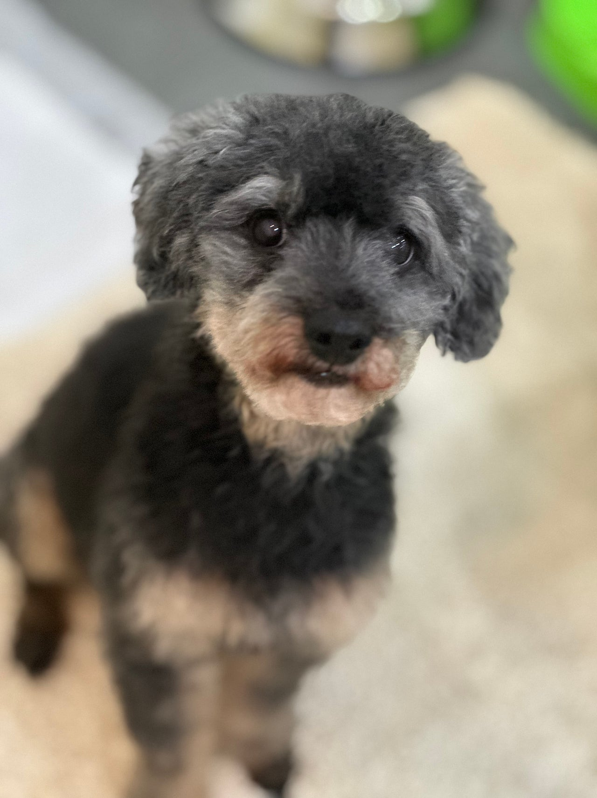

뼈밖에 없었던 로하의 살집통통 변신일기!!!
실버탄푸들 로하의 변신
말랐다는 말도 부족할정도로뼈만 앙상했던 우리 로하로하를 처음 봤을때 저는 눈물이 나오는걸간신히 참았답니다 ㅠㅠ우리 아가펫스토리를 조금만 더 일찍 만났더라면이렇게까지 아이가 힘들진 않았을텐데...안쓰럽다는 마음보다는 사람으로써미안한마음이 제일 컸던거 같아요그래서 로하를 좀더 신경 써주고매일매일 영양 가득한 특별식도 챙겨주고꾸준한 운동과 산책까지 병행해줬더니불과 2~3개월만에포동포동해지고 모질도 제법 좋아졌지 뭐에요!!!!이렇게 건강해지는 로하를 보니너무너무 감사하더라구요!이제 우리 로하는 자기만을 바라봐줄가족을 만나 남은 견생 행복하게보낼일만 남았답니다!!!!


0505-464-1004
댓글 19
영양 가득한 특별식이랑 산책, 운동을 병행했다는 과정이 보여요.
로하, 좋은 사람만 만나자.
조금만 더 일찍 만났으면 했다는 아쉬움이 글의 시작이에요.
로하, 좋은 가족 만나.
뼈밖에 없었다는 과거를 읽고 지금 사진을 다시 봤어요.
가족 되는 날이 하루라도 빨리 오면 좋겠어요.
자기만 바라봐 줄 가족을 기다린다는 마지막이 이 사진이랑 맞아요.
아프지 말고 잘 자라라.
로하, 이제 이 얼굴로 가족을 만나면 좋겠어요.
빨리 좋은 가족 만나면 좋겠어요.
특별식과 산책이 만든 살집이라는 걸 알고 보니 사진이 달라 보여요.
건강히 잘 자라라.
남은 견생을 행복하게 보내길 바라는 문장에 동의해요.
사랑받을 일만 남았으면 해요.
로하 변신 일기, 제목이 사진이 증명하고 있어요.
운동이랑 산책을 꾸준히 했다는 기록이 변신의 이유네요.
2~3개월 만에 살집과 모질이 좋아졌다는 변화가 이 일기의 핵심이에요.
살집 통통 변신, 과장 아니고 글에 적힌 그대로예요.
뼈만 있던 로하가 포동포동해졌다는 글이 사진이랑 맞아요.